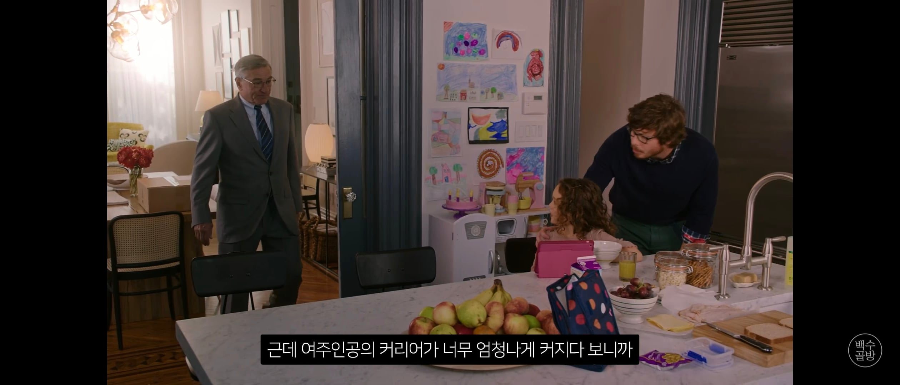

원작의 남편: 딸을 키우기 위해서 자기 커리어를 희생한 가족을 위해 헌신하다가 잠깐 흔들린 입체적인 인물
리메이크 남편 : 딸설정이 사라져서 지 할거 다하고 누릴거 다 누리고 바람까지 핀 개새끼
원작 부대표 : 주인공과 회사를 진심으로 걱정하는 친구
각색 부대표 : 회사를 집어 삼키려는 야욕을 가진 개새끼
원작엔 없는 여자 팀원들 아이디어를 훔쳐다가 자기껄로 삼는 개새끼
감독의 철학이 느껴 지십니따?

원작의 남편: 딸을 키우기 위해서 자기 커리어를 희생한 가족을 위해 헌신하다가 잠깐 흔들린 입체적인 인물
리메이크 남편 : 딸설정이 사라져서 지 할거 다하고 누릴거 다 누리고 바람까지 핀 개새끼
원작 부대표 : 주인공과 회사를 진심으로 걱정하는 친구
각색 부대표 : 회사를 집어 삼키려는 야욕을 가진 개새끼
원작엔 없는 여자 팀원들 아이디어를 훔쳐다가 자기껄로 삼는 개새끼
감독의 철학이 느껴 지십니따?
여자는 경영을 하면 안된다를 오히려 이 영화가 연출해버림 ㅋㅋㅋㅋㅋㅋㅋ
'여자면 집에서 애나 볼 것이지'란 성차별 흉도 원작에선 애엄마들이 했지만, 한국판은 남자들로 변경.
원작은 여성차별 가해자는 남자만이 아니라고 입체적으로 다뤘지만, 한국판은... 진짜 감독의 철학이 느껴짐.
한국 리메이크 ㅋㅋㅋ 리갈하이 보면 답이 안나온다는걸 알지
쎄했는데 거르길 잘했네
저런걸 좋아하는 수요층이 있으니까..
포장을 아무리해도 사상은 안바뀌는구나?
이정도면 치이카와가 극장가 점령하겠군 ㅋㅋㅋ
인간의 입체적인 면을 표현한 오피스 드라마에서
특정사상을 위해 단순화되어버린 페미식 라노벨이 되어버렸다는 평가들이....
그냥 덤덤히 일상이야기에 교훈들어있는 드라마에서
캐릭터성 빼면 뭐가 남나